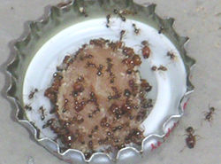

Bekämpfung von Ameisen
Hallo werter Leser,

vermutlich bist du über eine Suchmaschine auf diese Seite geraten, da du dich über die Ameisenbekämpfung informieren möchtest.
Ameisen im Rasen? Ameisen im Haus vernichten? Ameisen bekämpfen? Ameisen töten? Ameisen in der Küche? Das sind Fragen die - vor allem in der wärmeren Jahreszeit - vermehrt auftreten.
Zunächst muss man das eingrenzen. Handelt es sich um einzelne Ameisen in der Wohnung oder Küche, die immer wieder kommen? Handelt es sich um einen "Schwarm" geflügelter Tiere, die plötzlich aus Mauerfugen oder Bodenritzen kommen?
Weiterhin sollte erklärt werden, dass das Ameisenwiki in erster Linie einer Gemeinschaft von begeisterten Leuten dient, die diese Insekten in speziellen Behältern in den eigenen vier Wänden - ähnlich einem Aquarium - hält und versorgt. Beim weiteren Stöbern auf diesen Seiten kann man sich umfassend über Ameisen und deren Lebensweisen informieren.
Für die Lesefaulen hat der Betreiber des Ameisenwikis auch eine Audioeinführung in die Lebensweise der Ameisen und der Ameisenhaltung zum kostenfreien Download verfügbar:
- Netzgespräche Podcast "Spezialausgabe Ameisen"
- {{#ev:youtube|e30zMWx6Y5s|200}}

Grundlagen
Die Bekämpfung oder das Vertreiben von Ameisen ist aufgrund der Vermehrungsweise von Ameisen schwierig. Im Gegensatz zu den meisten anderen Insekten (ausgenommen Bienen und weitere Ausnahmen soziale Insekten wie Termiten) leben Ameisen in einem Staat. Das bedeutet, dass eine gewisse Arbeitsteilung besteht und nicht jede einzelne Ameise sich fortpflanzt, sondern im Nest eine oder mehrere Ameisenköniginnen existieren und nur diese die Eier legen, die anschließend von den reichlich vorhandenen Arbeiterinnen aufgezogen wird. Somit müssen die Königinnen getötet werden, um die Ameisenplage effektiv und langfristig zu beenden. Bleibt eine Königin am Leben wird diese den Verlust spätestens im nächsten Jahr wieder ausgeglichen haben, und da die einheimischen Ameisenköniginnen eine für Insekten sehr lange Lebensdauer von oft über zehn Jahren haben, kann die Kolonie noch viele weitere Jahre für Störungen sorgen.
Arten von Ameisenplagen
{kind=link}

Grundsätzlich ist nur zwischen 3 Varianten zu unterscheiden:
- Ameisenplage im Garten
- Auftreten oder massenhaftes Auftreten von "normalen" Ameisen im oder am Haus
- Auftreten von Geschlechtstieren (Ameisen mit Flügeln) im oder am Haus
Ein Thread aus dem Forum der Deutschen Ameisenschutzwarte erläutert, weshalb es wenig sinnvoll ist, die Ameisen zu bekämpfen, die im Rasen Erdhügelchen auftürmen:
Im zweiten Fall handelt es sich bei vereinzeltem Auftreten hauptsächlich um einzelne Arbeiterinnen, die außerhalb des Nests auf "Expedition" sind, um Nahrung oder Wasser für das Volk zu beschaffen. Wenn nur ab und zu ein vereinzeltes Tier zu sehen ist, ist das wie mit einer Fliege oder Mücke in der Wohnung - das passiert. Wird jedoch etwas Verwertbares gefunden, kann sich die Anzahl der Tiere in kurzer Zeit stark erhöhen und eine regelrechte Ameisenstraße entstehen. Hier kann man entweder das Objekt des Interesses entfernen (z. B. auch durch häufiges Leeren des Abfalleimers in der Küche, worin sich Ameisen bevorzugt aufhalten) oder die Wege mit einer der unten erwähnten Methoden beeinflussen.
Treten massenhaft "viele große Ameisen mit Flügeln" auf, ist man auf ein Nest gestoßen, das sich gerade in einer Fortpflanzungsphase befindet. Diese Ameisen mit Flügeln sind zur Paarung bereite Jungköniginnen und Männchen - aber keine Angst, diese vermehren sich nicht untereinander sondern Treffen sich "draußen" mit den Geschlechtstieren anderer Nester um sich zu verpaaren. Der Abflug von Geschlechtstieren geschieht etwa 2-5 mal pro Jahr und deutet auf eine große Kolonie im Nest.
Vertreibung
Eine nie beantwortete Frage ist, wohin die Ameisen vertrieben werden sollen, falls das Mittel tatsächlich wirkt. In die Nachbarwohnung? Oder im Freien in den Nachbargarten?
Wenn die zu vertreibende Ameisenart an dem vorgesehenen neuen Platz überhaupt leben kann, so lebt sie in aller Regel dort bereits. Wenn man also ein Volk ins Nachbargrundstück treibt, stößt es auf dort ansässige Völker. Aufgrund der Territorialität der meisten Ameisenarten startet man dann bestenfalls eine Völkerschlacht. Schnelle Vernichtung an dem Ort, wo die Ameisen stören, ist vielleicht doch humaner.
Irrtümer
Viele Methoden wie beispielsweise "Ameisen mit Backpulver bekämpfen" bleiben trotz zweifelhafter Wirkungsweise im Volkswissen erhalten. Hier wollen wir zuerst einmal auflisten, was NICHT hilft oder nicht sauber zu reproduzieren ist.
- Bäckerhefe - Schadet den Ameisen nicht
- Backpulver - Ist für Ameisen tödlich giftig, wie zwei Forscher der University of Georgia in Griffin wissenschaftlich belegten. Hierbei gibt es keine grausamen Explosionen, wie oft vermutet, sondern die Ameise stirbt, weil das Natron (nichts anderes ist Backpulver) den pH-Wert im Körper verändert.
Notwendige Diskussion direkt hier: In dieser Übersicht im AWiki geht es um Praxis-relevante Anwendungen der diversen Mittel. In der zitierten Arbeit wurden die Ameisen gezwungen, sich permanent auf Flächen aufzuhalten, die mit Backpulver bestreut waren. Ameisen meiden generell staubige Flächen, laufen daher u. a. auch nicht über Gipsstaub oder einen Kreidestrich, und ebenso wenig über Backpulver. In einer Befallssituation hat ein Ameisenvolk wohl immer die Möglichkeit, die mit Backpulver bestreuten Flächen zu umgehen, und sei es entlang einer Wand oberhalb der Backpulver-Fläche. Backpulver ist tödlich giftig für Ameisen, richtig: Unter den in der Veröffentlichung angegebenen Bedingungen. Bitte die Publikation genau lesen, ggf. übersetzen, und dann genau die angegebenen Bedingungen herstellen. Dann ist der Erfolg gewiss!
- Salz, Öl - Schadet den Ameisen nicht
- Verschiedene Sprays, welche nicht exklusiv als Ameisenbekämpfungsspray beworben werden, wie beispielsweise Clotrimalzol-Spray -Schadet den Ameisen nicht, allerdings kann das Lösungsmittel die Ameisen vereinzelt töten.
Selbsthilfe
Es gibt verschiedene in der Praxis wirksame Verfahren um Ameisen von bestimmten Objekten fern zu halten, sowohl im Freien als auch in der Wohnung.
Da Ameisen allgemein nicht gerne über Öl oder Wasser laufen, kann man z.B. einen Bienenstand vor dem Eindringen von Ameisen schützen, indem man die Füße des Gestells in Dosen mit Mineralöl oder Wasser stellt. Wasser trocknet aus, muss öfter ersetzt werden. Auch Öl wird durch Staub allmählich unwirksam.
In der Wohnung kann das auch helfen, um die Ameisen von Tisch oder Speiseschrank fern zu halten. Das spielt allerdings wohl nur in Ferienwohnungen in wärmeren Ländern eine Rolle, wo man sich oft tatsächlich vor Ameisen kaum retten kann. Hölzerne Möbelfüße saugen sich natürlich voll und können verquellen.
Eine vielfach zu lesende Empfehlung ist, einen Kreidestrich um ein zu schützendes Objekt zu ziehen: Es stimmt, dass Ameisen diesen Strich zunächst nicht gerne überqueren. Seine Wirkungsdauer lässt aber zu wünschen übrig. Luftzug, Wind, Regen machen diesen "Schutz" sehr schnell unwirksam, ganz besonders im Freien.
Eine sehr kurzfristige - halbherzige - Lösung kann sein: Aufsaugen. Mit einem Staubsauger ohne Düse sind die Tiere schnell "erst mal weg". Ggf. kommen nach ein paar Minuten "ein paar Schwestern" - dann muss eben nochmal gesaugt werden.
Wirksame Verfahren
- Das Aufbringen einer Lösung von Wasser mit Teebaumöl hält die Ameisen von den behandelten Stellen fern - kann aber eine Geruchsbelästigung erzeugen.
- Ameisenfraßköder, alle mit denselben Versprechungen. Ob ein Erfolg erzielt wird, hängt in sehr starkem Maße davon ab, welche Ameisenart bekämpft werden soll, und unter welchen räumlichen Gegebenheiten das Problem auftritt.
- Auf die Straßen kann Puderzucker mit Natron oder Borax gestreut werden. Dieser wird aufgenommen und tötet die Individuen
- Kampfer in Alkohol 1:10 auflösen und mit einer Blumenspritze auf die Tiere sprühen.
- Spritzmittel mit den Wirkstoffen Phoxim, Chlorpyrifos, Fipronil
- Zimt auf der Ameisenstraße blockiert sie für einige Tage, danach ist wieder Zimt zu streuen angesagt.
- Ameisenfresslack (mit Trichlorphon und Waldhonig als Köder) wird in den Bau getragen und tötet zugleich einen Teil der Brut ab. KORREKTUR Okt. 2013: Trichlorphon ist nicht mehr zugelassen. Es wirkt auch zu schnell, so dass furagierende Arbeiterinnen sterben, bevor sie das Gift im Nest verteilen können (Information von Dr. Heller, DASW).
---
Leberwurstköder zur Bekämpfung der Braunen Wegameise Lasius brunneus:
Hier ist ein hoffnungsvoll stimmender Bericht über eine gut durchdachte Bekämpfung von Lasius brunneus in einer Wohnung:
Die Zubereitung des Leberwurstköders wird hier beschrieben. Auch hier wird von einem erfolgreichen Einsatz berichtet:
Selbstverständlich schafft die Vergiftung der Ameisen nur vorübergehend Abhilfe. Mit einem Wiederaufleben des Befalls bzw. einer erneuten Besiedlung muss gerechnet werden, so lange die für die Ameisen geeignete Nistgelegenheit weiter besteht. Auf Dauer werden nur bauliche Maßnahmen (Ersatz befallener Holzteile und/oder Isoliermaterialien, Schutz vor Feuchtigkeit) Erfolg versprechen.
---
Im Forum der Deutschen Ameisenschutzwarte findet sich ein sehr aufschlussreicher Beitrag von G. Heller über diverse Köderverfahren zur Ameisen-Bekämpfung und deren Wirksamkeit:
Es lohnt sich, immer wieder einmal auf diese Seite der DASW zu sehen, wo öfter konkrete Beispiele von Ameisenbefall diskutiert werden:
Ein bemerkenswerter Bericht über die Bekämpfung eines Befalls mit Lasius brunneus in einem Holzhaus.
chr-behr - Betreff des Beitrags: Re: Neu - Ameisen im HUF (Holzhaus) - welche Art ? (Beitrag # 4) Verfasst: 05. Jul. 2013, 08:49
Guten Tag Prof. B….,
ich möchte hier noch einmal kurz den weiteren – teils bemerkenswerten – Fortgang unseres Ameisenproblems schildern. Nach der Entdeckung und vergeblichen Anköderung der Ameisen haben wir endoskopische Untersuchungen der mit lockerer Steinwolle gefüllten Wandelemente und der unter dem Estrich befindlichen Dämmung (teils gepresste Steinwolle, Teils Styropor) begonnen. Hierbei haben wir festgestellt, dass die Wände offenbar (ggf. durch die Mineralwolle bedingt) nicht betroffen waren,der gedämmte Bereich unterhalb des Estrichs dafür umso mehr.
Wir haben uns dann durchgerungen zunächst einen Teil der Fiesen und dann auch des Estrichs zu zerstören und sind im Bereich der im Fußboden verlaufenden Warmwasserleitung auf große Mengen sowohl (im Pulk zusammenkauernder) geflügelter Ameisen und auch normaler Arbeiter Ameisen gestoßen.
Wir haben dann weiter endoskopiert und haben einen ca. 40 x 50 cm Nistbereich im Styropor ca. 1,50 m entfernt – entlang der Warm& und Kaltwasserleitung gefunden.
Dann haben wir in dem gesamten Raum den Fußboden samt Estrich geöffnet und sehr, sehr große Mengen mit Ameisen / mit geflügelten und Eiern/und oder Larven gefunden die dann in Windeseile per Chlorpyrifos haltigen Spray , Staubsauger und rauschmiss in den Garten beseitig wurden. Ein echter Chaoseinsatz…. Sie waren zT im Styropor eingenistet Nach dieser Aktion tauchten ganz vereinzelt Flugexemplare im Nachbarraum auf. (Vertriebene Exemplare?) Übrig blieben in diesem Raum zwei ca. 1,3m x 1, 10m x 40 cm Höhe Stahlbeton - Sockel (Gewicht ca. 1 Tonne pro Stück) auf denen die Heizungs-, Warmwasser und Klimaanlage standen.
Bei genauerer Untersuchung stellten wir fest, dass beide Betonsockel zu Vermeidung von Vibrationsübertragung auf die Bodenplatte auf ca. 2,5 cm starke vollflächige Korkplatten gesetzt worden waren. Diese Platten waren total durchlöchert (unter den schweren Betonsockeln !) und es kamen Ameisen heraus.
Wir haben dann die gesamte Heizungsanlage, Warmwasseranlage (natürlich verbunden mit Auszug aus unserem Haus) und Klimaanlage demontieren lassen, rund um die Korkplatten Schwerlastgerüst aufgestellt und dann die Betonsockel über Kettengreifzüge angehoben (ca. 50cm hoch): Es war als wenn man einen Ameisenhügel an einen Autokran hängt: Millionen von Ameisen mit Eiern etc. fielen aus den unter den Betonsockeln befindlichen Korkplatten… erst sprayten wir, dann kam ein 650 Grad Heißluft föhn zum Einsatz und als dies diese unglaubliche Menge immer noch nicht beherrschen ließ, haben wir einen bereit stehenden Dachdeckerbrenner (wie zum befeuern von Flachdachschweisbahnen) verwendet und jeden Sockelboden ca. 5 – 10 min diesem gewaltigen Flammenwerfer ausgesetzt. Qualm, Gestank, dichter Rauch zT brennender schmorender Kork….
Das besonders bemerkenswerte war, dass am nächsten Tag beim Abstemmen des inzwischen abgekühlten, teils stark verschmortem Kork noch immer (!!!) eine Menge Ameisen herabfielen die im Zuge der Abstemmarbeiten dann per Industriesauger abgesaugt wurden. Wie diese Tiere das wahrhaftige Feuerinferno überleben konnten ist nahezu unglaublich – bzw. zeigt was für ein gutes Isoliermaterial der Kork ist.
Nunmehr sind alle Korkreste beseitigt, die Sockel auf Gummischrot matten zurückgesetzt und der Raum wird vollständig gegen zukünftigen Befall abgeklebt und neu aufgebaut. Im Haus sind – die letzen 3 Tage - im Nachbarraum pro Tag noch 1 – 2 Flugtiere aufgetaucht….
Nun meine kurze Frage:
1.) Ist es wahrscheinlich, dass die Kolonie so nachhaltig zerstört wurde, dass das zunächst der Ameisenbefall beendet ist? Bei dem gewaltigen Inferno war es natürlich nicht möglich zu untersuchen, ob nun auch die Königin dabei war – es gab jedoch Millionen von Eiern Larven etc. die vernichtet wurden.
2.) Für wie Wahrscheinlich ist es, dass noch Nachbarräume betroffen sind (ein Zugang wäre durch die Boden Dämmung möglich). Könnten die pro Tag 1 – 2 auftauchenden fliegenden Restexemplare (letzten 3 Tage) vertriebene Flüchtlinge sein? Es gab – bis auf diffundierende Feuchte in der Boden platte – und allerdings nicht wenig Kondensfeuchtigkeit (Waschraum etc.)- keine Bauschäden.
Ein Rätsel bleibt die Ernährungsmöglichkeit der Tiere: Diese Abermillionen Ameisen zu ernähren (von außen) hätte doch sichtbar werden müssen. Lebensmittel sind nie angegangen worden. Ich denke, dass die Bindemittel der Korkplatte (Glukose haltig ? – siehe älteren Thread zu „Irrsinn und Korkdämmung“ ) ggf. Nährstoff gewesen seien könnten.Durch den Kork, die Kondensfeuchte und die Wärme war unser Hauswirtschaftsraum sicher ein optimaler Lebensraum für die Tiere.
3.) Lässt sich schätzen, wie lange diese Kolonie schon bei uns genistet hat ? Diese gigantischen Kork arbeiten können doch kaum Produkt von nur ein paar Wochen/Monaten sein.
Danke für das Interesse und ggf. Beantwortung der Fragen.
Professionelle Schädlingsbekämpfung
Die Kosten einer Bekämpfung durch einen professionellen Schädlingsbekämpfer werden sehr unterschiedlich ausfallen, abhängig von der Art, der Ausdehnung des Befalls, der eingesetzten Methode(n) und der Dauer notwendiger Bekämpfungsmaßnahmen.
Als Hinweis soll eine Angabe aus dem Forum der Deutschen Ameisenschutzwarte im Juli 2011 dienen. Es geht um die Bekämpfung von Lasius emarginatus im Haus:
Zitat des Betroffenen: Von einem Schädlingsbekämpfer wurde mir ein Preis von 80,- EUR + MWSt. für die Anfahrt und Bestimmung der Ameisenart genannt. Die eigentliche Bekämpfung (mehrere Termine) hätten dann nochmals rund 80,- EUR + MWSt. pro Termin gekostet. http://www.ameisenschutzwarte.de/forum/viewtopic.php?f=23&t=1442
Spezielle Anleitung für bestimmte Arten
Das allgemeine Bestimmungs- und Beratungsforum der DASW musste leider ab November 2013 stummgeschaltet werden, wegen Überlastung und Missbrauchs. Die Inhalte stehen jedoch weiterhin zur Verfügung. Für betroffene Nutzer besteht nun die Möglichkeit, sich an einen "Bestimmer" bei dem für dasjeweilige Bundesland zuständigen Landesverband zu wenden. Adressen finden sich auf der Webseite der DASW. Grundsätzlich soll zunächst angefragt werden, ob der Bestimmer bereit ist, die Anfrage zu bearbeiten. Unaufgefordert zugesandte Proben werden u. U. sehr verzögert beantwortet: Die Mitarbeiter der DASW sind nicht permanent anwesend und erreichbar!
Hier ist die "Anleitung" zum Einsenden wiedergegeben:
In den meisten Fällen empfiehlt es sich, einige Ameisen (5-10, möglichst Arbeiterinnen) z.B. durch die Deutsche Ameisenschutzwarte bestimmen zu lassen. Einsendung in kleinem (!), gut schließendem Gefäß mit Brennspiritus oder anderem Alkohol; es geht z.B. mit 70 % Alkohol, zur Not sogar mit Schnaps (ca. 40 %).
Je nach Art sind unterschiedliche Empfehlungen zu erwarten. Als Beispiel sei hier die in Mitteleuropa weit verbreitete und als Hausameise schädliche Lasius brunneus genannt. Die Antwort fällt dann etwa so aus:
Betr.: zugesandte Ameisen-Probe
Sehr geehrte/r Herr / Frau XXX,
Es handelt sich um die “Braune Wegameise” (Lasius brunneus), eine bei uns in Wäldern, Parks und Gärten häufige Art. Sie nistet allerdings auch gerne in Gebäuden, wobei die Arbeiterinnen zur Futtersuche nur selten ins Haus kommen, sondern Wege nach draußen zu Bäumen mit Blattläusen und Beuteinsekten belaufen. Die geflügelten jungen Königinnen und Männchen tauchen häufig im Frühsommer innerhalb des Hauses auf.
Die Bekämpfung gerade dieser Art ist schwierig: An handelsübliche Fraßgifte geht sie nicht. Außerdem würde, selbst bei erfolgreicher Vernichtung des Volkes, die nach wie vor bestehende Nistgelegenheit sehr bald von einem neuen Volk entdeckt und besiedelt. Ursache für ihre Ansiedlung sind von außen zugängliche, geeignete Materialien (Isolierungen, auch z.B. Styropor, Kokosfaser, Kork, Spanplatten, morsches Holz) in Verbindung mit etwas Feuchtigkeit. Gibt es Undichtigkeiten im Dach? Feuchte Stellen an der Wand? Falls möglich trockenlegen und evtl. von außen die Zugangswege für die Ameisen z.B. durch Silikon-Dichtmasse versperren. Leider vergreift sich L. brunneus auch, von “weicherem” Isoliermaterial ausgehend, an tragenden Holzteilen, die so zerlöchert werden können, dass Bruchgefahr besteht.
Betr. Bekämpfung finden Sie im Forum der DASW weitere Informationen, s. http://www.ameisenschutzwarte.de/forum/viewforum.php?f=23&start=0
Zurzeit werden Köder mit den Wirkstoffen Fipronil oder Spinosad empfohlen. Herr Dr. Heller gibt dazu gute Hinweise. Bes. auf höhere Wirkstoffkonzentration achten! Z. B. Neudorff Loxiran enthält mit 0,15 g/kg Spinosad zu wenig von dem Wirkstoff. Z. B. im Compo Ameisenköder ist der Wirkstoff Spinosad mit 0,8 g/kg deutlich höher dosiert. Damit wurden im Forum Erfolge erzielt.
Aber wie oben gesagt: Eine reine Bekämpfung verschiebt das Problem nur, Sie müssen möglichst die Nistgelegenheit beseitigen (lassen). Bei Mietwohnungen ist übrigens der Vermieter für die Beseitigung von Ungeziefer zuständig. Sie selbst trifft mit Sicherheit keinerlei Verschulden!
Viele Grüße,
(Unterschrift)
(A. Buschinger, 06. Juli 2013)
Waldameisen
Waldameisen sind außerordentlich nützliche Schädlingsvertilger, sind deshalb gesetzlich geschützt und dürfen nicht gestört oder geschädigt werden. Falls die Waldameisen im besiedelten Gebiet/Garten als störend empfunden werden, sollten Sie den für Ihr Bundesland zuständigen Landesverband der Deutschen Ameisenschutzwarte informieren: http://www.ameisenschutzwarte.de/frame.php?section=asw